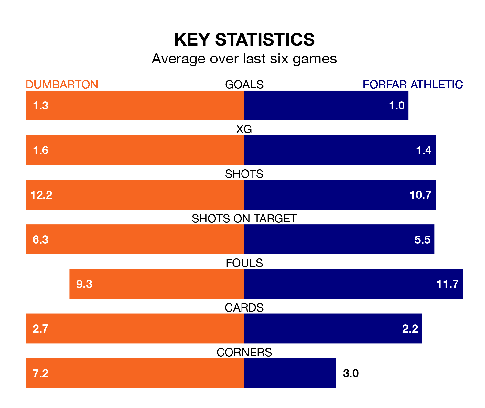

Dumbarton host Forfar Athletic in Saturday's match at the moreroom.com Stadium looking to bounce back from defeat last time out in League Two.
The Sons, who sit fourth in the league after 21 games, fell to a 1-0 away defeat to Stenhousemuir on February 3.
They face a Forfar side who picked up a win in their last match, a 1-0 victory against Spartans, and who sit seventh in the table.
With 21 goals in 22 games so far this season, Forfar are the league's second-lowest scorers with 1.0 goals per game. But they are conceding fewer than average too, letting in 26 goals at a rate of 1.2 per game.
Dumbarton, meanwhile, are above average scorers, with 1.7 goals per game, compared to a league average of 1.3. They have conceded 1.2 goals per game.
With Marc McCallum between the sticks, Athletic can rely on one of the league's safest pair of hands. He has kept eight clean sheets in his 22 appearances this season, and only one other 'keeper – Stenhousemuir's Darren Jamieson – has been able to prevent the opposition scoring on more occasions in League Two.
In the Sons's net, Brett Long has five clean sheets in 14 games.
In the last 10 years, Dumbarton and Forfar have played each other on 18 occasions. Dumbarton won seven of them, Forfar six, and they drew five times.
On average, the Sons scored 1.5 goals and the Loons 1.3 in those matches.
Their last meeting was on December 16, when Dumbarton won 4-2 away.
The home side are in disappointing form in League Two, with one win and two draws from their last six games.
With three wins and two draws over that period, the Loons' form is much better – they have taken 11 points from 18, compared to Dumbarton's five.
Updated: 11:18 (UTC), 08/02/24